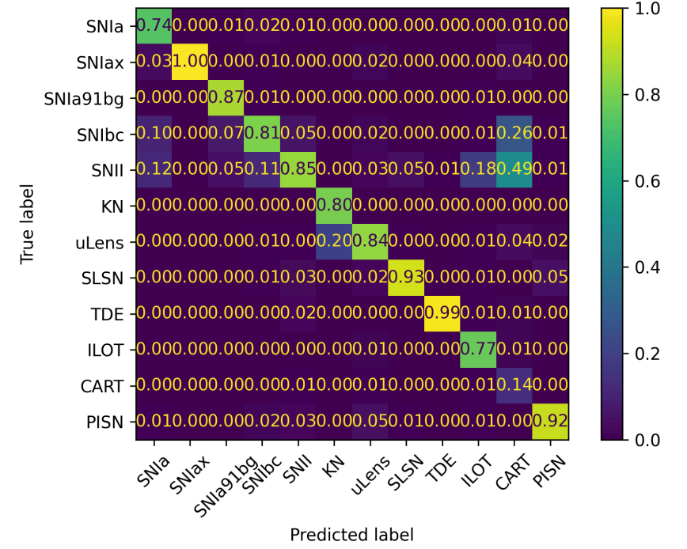

Broker

The live AMPEL instance can work as a traditional broker, where a user selects criteria for what events should be considered as interesting, and combine these with a desired output feed. A series of default photometric classifiers are consistently applied to alerts ingested by the AMPEL live instances hosted by DESY. Users can use these to quickly select subsets of the alerts for further inspection and/or processing. Alerts can be selected based on:
- Number of detections
- Latest brightness
- Age
- Min prob of one of [SNIa, SNII, SLSN, SNIbc]
- Ampel z
A stream endpoint can be chosen as one of:
- A slack channel
- A Fritz instance
- An external folder (with scp access)
An example AMPEL workflow, based on the ELAsTiCC simulation of LSST alerts, can be found here. This can be used as a starting point for understanding throughput rates and the properties of the photometric classifiers. Contact us for further information.